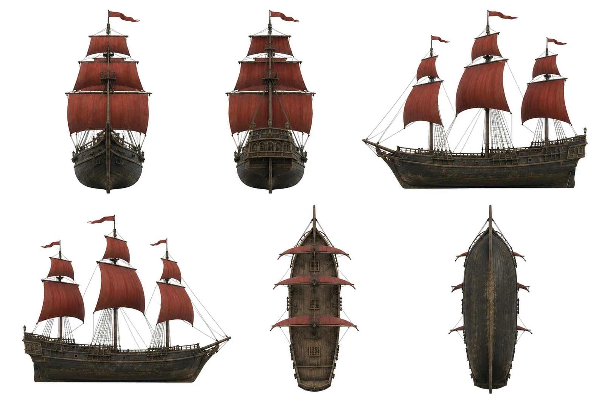
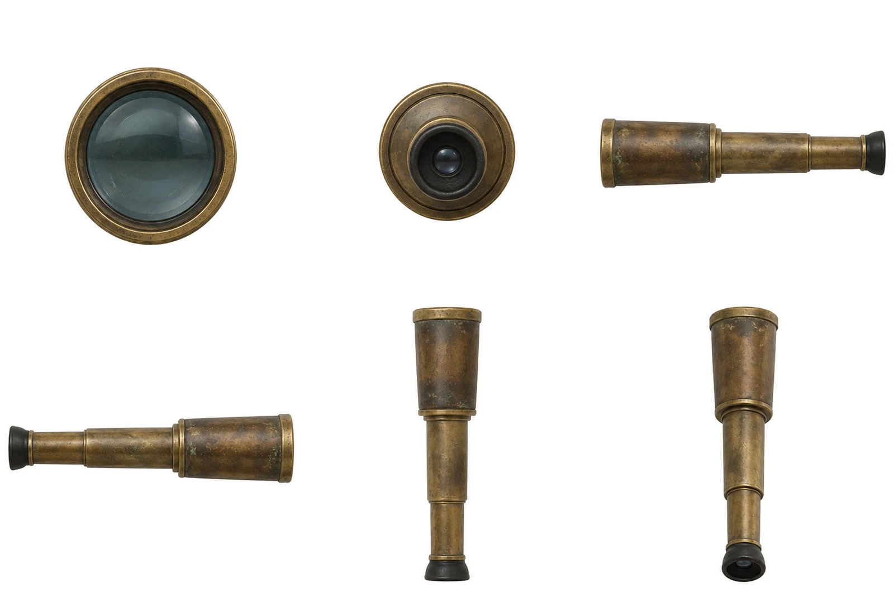
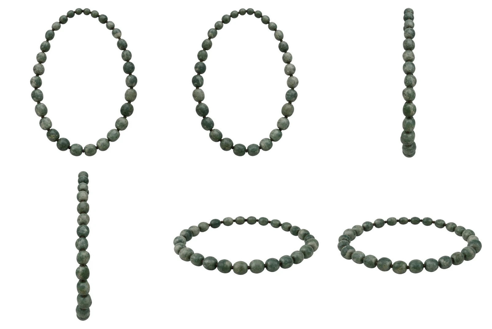
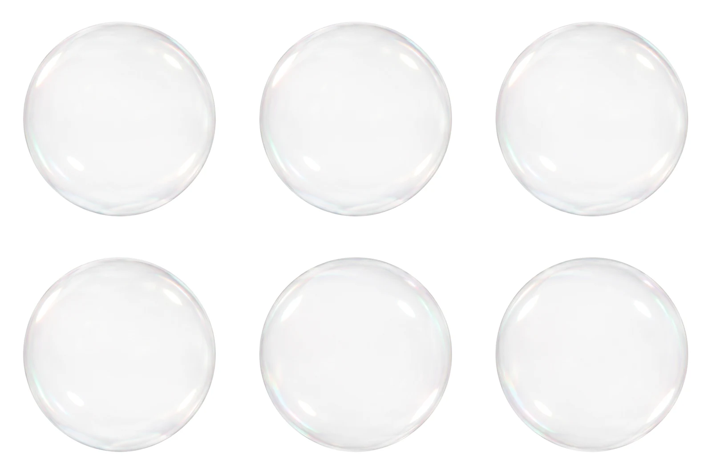
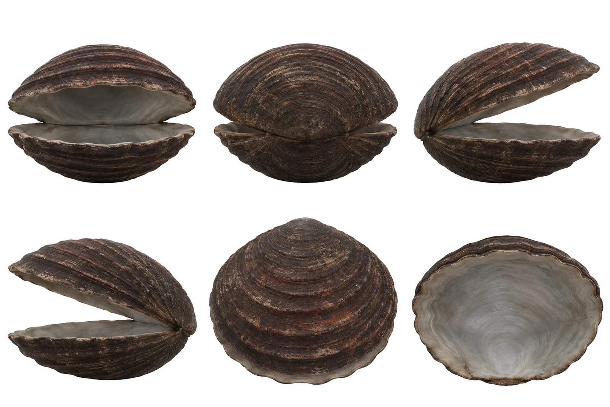
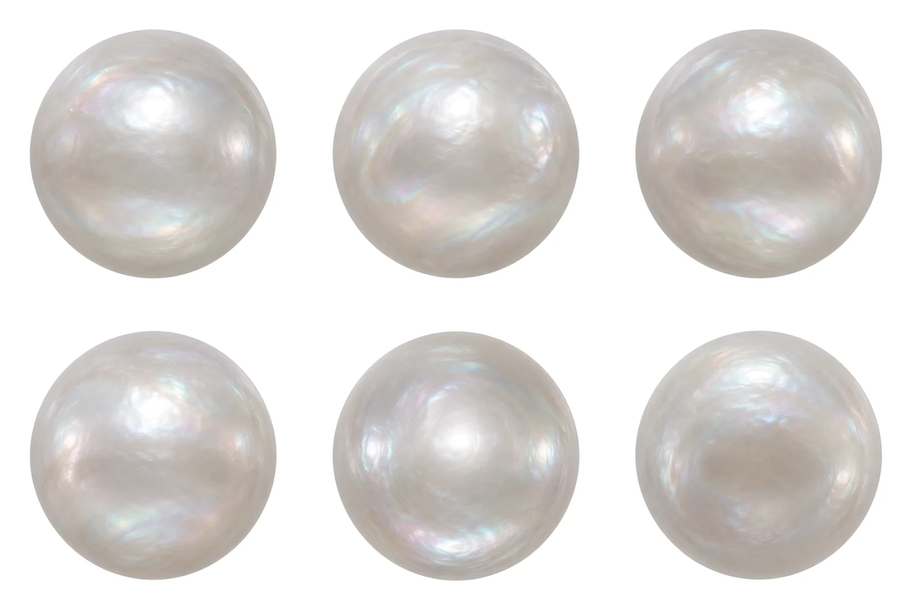
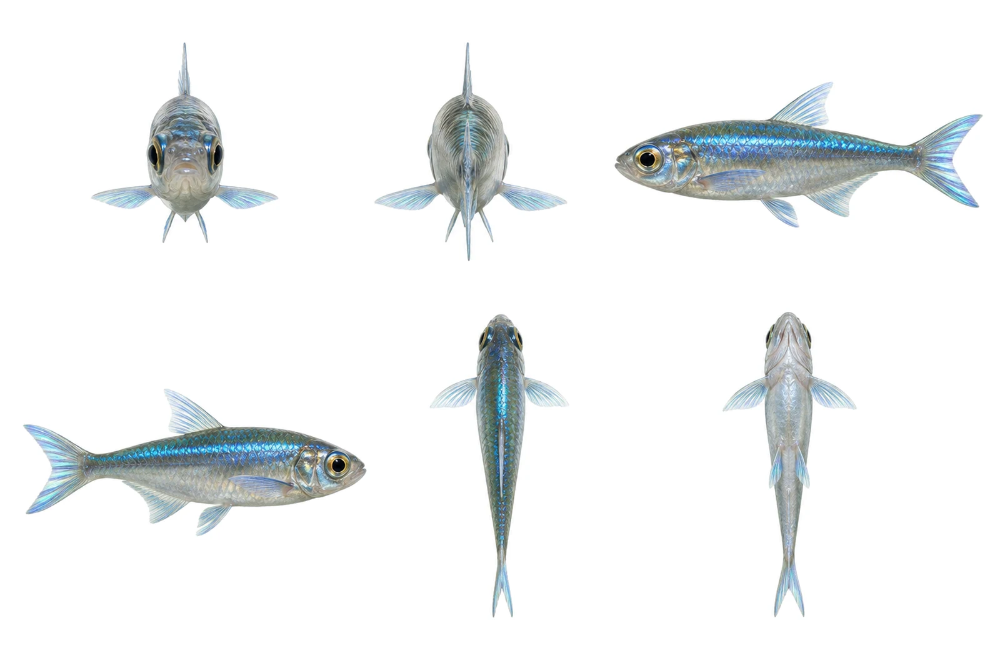

二集
剧本与分镜
完整剧本与分镜脚本
下载原文国外短剧 · 二集 原片时长 129.15 秒 故事梗概 红帆船逼近岛岸，船长通过望远镜认出鲨裔守护者。守护者带红发女子潜入浅水，用透明气泡护她呼吸，两人穿过游鱼环绕的岩隧。岩隧尽头是一座带微光的洞湖，半开的巨蚌中藏着月光珍珠。 人物 红发女子先担心来船，再接受潜水。鲨裔守护者判断来者身份并引路。红帆船长认出守护者，船上壮汉随他观察海岸。 场景 临海草坡及浅滩建立岸船距离，红帆船甲板承担船长段落，水下岩隧连接浅滩和月珠洞湖，洞湖以巨蚌为视觉终点。 道具用途 红帆木船和单筒望远镜建立追踪，空气泡解决潜水呼吸，小鱼提供水下纵深，巨蚌与珍珠触发结尾发现，人物佩戴物延续前集。 剧本与分镜 按原片抽帧重建的复拍制作稿。画面未能确认的对白、音效与镜头节奏按下表执行。 | 镜号 | 画面内容 | 镜头视角 | 使用资产 | 动作描述 | 台词/旁白 | 音效 | 单镜头时长 | | 01 | 红帆木船绕过礁石 | 高位海岸大全景 | 红帆木船、临海草坡与浅滩 | 帆船朝岛靠近，水面留出目测距离 | — | 风帆、海浪 | 5.00秒 | | 02 | 女子看见海上动静 | 正面近景 | 红发落难女子、临海草坡与浅滩 | 她握住胸前吊坠，盯着远处 | — | 海风 | 6.00秒 | | 03 | 守护者认出来者并转身 | 守护者正脸近景接肩后远景 | 鲨裔守护者、红发落难女子、红帆木船 | 他把身体移到靠海一侧，提醒女子 | 守护者：坏人来了。 | 低浪 | 8.00秒 | | 04 | 船长举镜看岛 | 甲板中景 | 红帆船长、黄铜单筒望远镜、红帆船甲板 | 船长稳住单筒镜，朝草坡调焦 | — | 绳索振动 | 9.00秒 | | 05 | 镜中山脊显现两道人影 | 遮圆形视野的主观远景 | 鲨裔守护者、红发落难女子、临海草坡与浅滩 | 把两人放在坡顶边沿 | — | 风声被压低 | 6.00秒 | | 06 | 船长认出潮汐守护者 | 望远镜镜头特写切脸 | 红帆船长、黄铜单筒望远镜 | 缓缓降低望远镜，嘴角露笑 | 船长：潮汐守护者。 | 镜筒轻扣、木船声 | 12.00秒 | | 07 | 壮汉和船长靠着栏杆 | 背面双人中景 | 红帆船长、船上壮汉、红帆船甲板 | 两人并肩面对岛岸，暂时留在甲板 | — | 风与帆布 | 7.00秒 | | 08 | 女子在浅水里不敢下潜 | 腰部高度双人中景 | 红发落难女子、鲨裔守护者、临海草坡与浅滩 | 女子抱住守护者前臂，抬眼表示担心 | 女子：我在水下不能呼吸。 | 浅水拨响 | 8.00秒 | | 09 | 守护者在她脸旁形成气泡 | 双人脸部近景 | 红发落难女子、鲨裔守护者、透明空气泡 | 守护者慢慢抬手，女子睁眼试着吸气 | 守护者：相信我，呼吸。 | 薄水震动、轻呼吸 | 8.00秒 | | 10 | 二人从浅水游向隧口 | 水下侧后全景 | 红发落难女子、鲨裔守护者、水下岩隧、透明空气泡 | 守护者牵引女子越过沙地，进入昏暗隧口 | — | 浑厚水声 | 8.00秒 | | 11 | 鱼群掠过岩隧 | 跟拍中远景切女子反应 | 发光小鱼、透明空气泡、水下岩隧、两位主角 | 小鱼从二人前侧掠过，女子偏头观察 | — | 游水声 | 9.00秒 | | 12 | 女子隔着透明气泡观察隧底 | 前方双人中近景 | 红发落难女子、鲨裔守护者、透明空气泡、水下岩隧 | 牵手向前，女子用空出的一手触到气膜外缘 | — | 水下底音 | 15.00秒 | | 13 | 出口光线给两人剪影 | 隧道轴线低位全景 | 水下岩隧、鲨裔守护者、红发落难女子 | 二人游向暖光，身影逐渐变小 | — | 水声渐亮 | 7.00秒 | | 14 | 洞湖全貌从水面展开 | 女子中景切高位全景 | 月珠洞湖、红发落难女子 | 女子从水里抬头，环顾洞穴 | — | 滴水、洞内回声 | 9.00秒 | | 15 | 守护者走到半开的巨蚌旁 | 斜角中景 | 鲨裔守护者、巨蚌壳、月光珍珠、月珠洞湖 | 守护者扶住壳沿，露出其中的银白光点 | — | 水滴、蚌壳低响 | 7.00秒 | | 16 | 女子认出月光珍珠 | 正面特写 | 红发落难女子、月光珍珠、圆形小吊坠 | 睁大眼睛，低声叫出名字 | 女子：月光珍珠。 | 洞内回声收束 | 5.15秒 | 时长合计 129.15 秒
制作资产
角色资产 · 8 项
场景资产 · 4 项
道具资产 · 16 项






